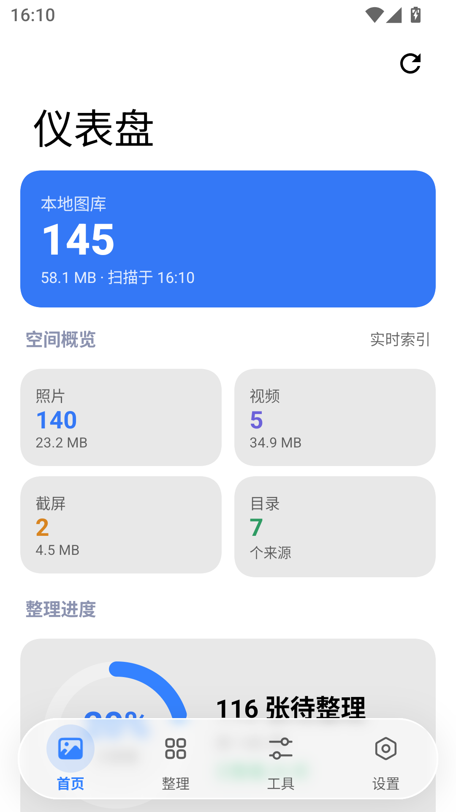
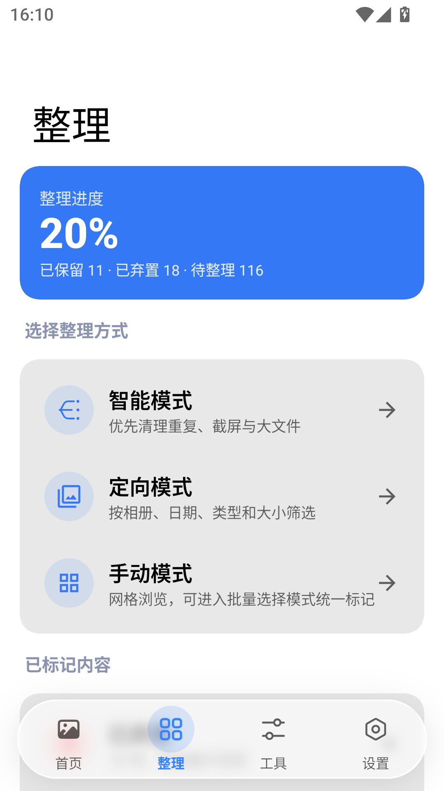
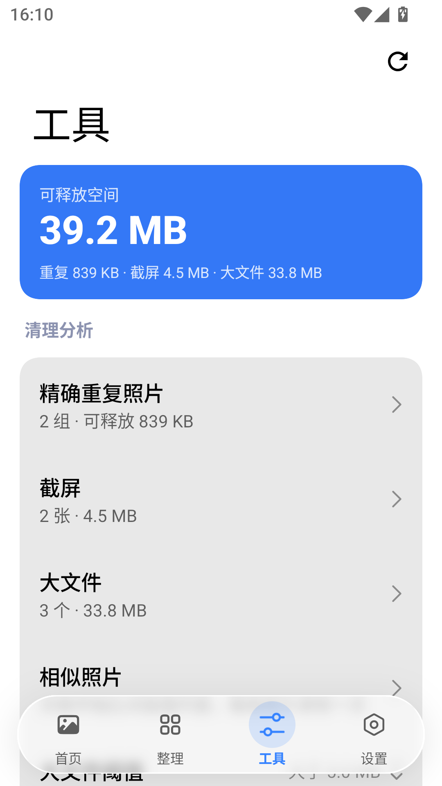
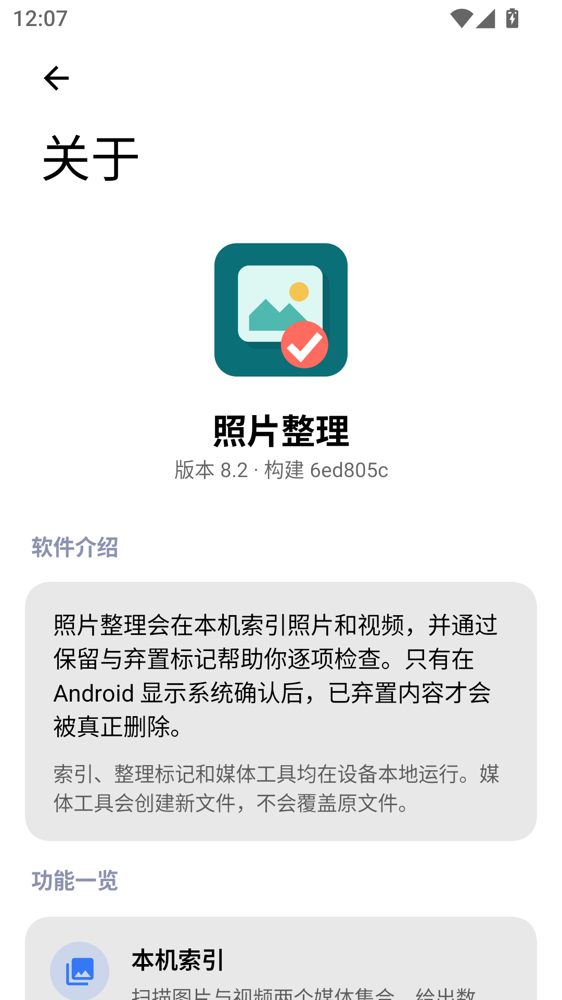

Index
先看清有多少
首页把图库摊开：照片、视频、截屏各多少张、占多少空间，来自几个目录，还有多少没过目。
「可释放空间」是重复副本、截屏、大文件三项加起来的估算，点进去能看到它由哪些文件组成——不是一个含义不明的「清理」按钮。授权只给了部分照片时，界面会一直标着这件事，因为那意味着统计本身是不完整的。

Triage
三种取舍方式
每一项最后只有两个结果：保留，或弃置。两个集合随时能回看，也随时能改主意。
决定被记在一个只追加的日志里，所以标记一项的开销和图库多大无关。同一张照片被换掉之后，它旧的决定会自动失效，不会把新文件按旧判断处理。

智能模式
按收益排队：先问重复副本，再问截屏，再问大文件，最后才是其余项目。删掉一张能省多少空间，决定它排第几个出现。
定向模式
按相册、日期区间、类型（照片／视频／动态照片／截屏）和最小体积筛一遍再看。只想清 2023 年那个下载目录，就只看它。
手动模式
三列网格，进入批量选择模式后可以连续点选、一次标记一批。按日期排序时按天分组；按大小排序时按月份分组、每月里大的在前——最占空间的那几张会落在同一屏，而不是被打散成一条全库长队。
Dedupe
它怎么知道哪些是重复的
同一张照片的两份副本，字节数必然相同。所以先按字节大小分桶——只有落在同一个桶里的文件才值得算 SHA-256。
SHA-256。
相似照片是另一回事
连拍、重新编码、缩放过的同一个画面，字节完全不同。这一项用感知哈希（dHash）比较画面本身，因此必须解码每一张图片——所以它不会自动跑，要你在工具页里主动开始，随时可以取消，算过的结果会留到下次启动。
算过的不再算第二遍
两种哈希都按「URI + 大小 + 修改时间」缓存，并写进一个纯文本文件。这个文件坏了或读不出来，只会让下一次重新算一遍，不会变成一个需要你处理的错误。
随时能停下
扫描和哈希的每一层循环都在检查取消状态。切走页面、重新扫描、改索引范围都会立刻生效，一次被放弃的扫描不会在几秒后把过期结果盖回界面上。
Transcode
删不掉的，可以压小
图片能转 JPEG／WebP／PNG、限制长边、调质量、保留或清除 Exif；视频能转 1080p／720p／480p、限码率、只留视频或只提取音频。
转码用的是设备自己的硬件编解码器，应用里没有任何原生二进制文件——所以它在每一种 ABI 上都能跑，包括 x86_64 模拟器。

源文件永不修改
处理全程在缓存目录里进行，成品写进 Pictures｜Movies｜Music/Photo Organizer。原来那张照片从头到尾没被碰过。
变大就放弃
输出比输入还大时，结果直接丢掉，并告诉你原文件更小。压缩不该让文件变大，那种结果不值得留下来占地方。
失败会清干净
任何一步出错，已经写出去的半成品会被删掉，不会在相册里留下一个打不开的文件。错误信息是本地化的，不是一串异常堆栈。
宁可报错，不悄悄降质
不带缩放的解码超过 1200 万像素会直接报错。悄悄降采样等于在你没同意的情况下改了画质。
Boundaries
它不会做的四件事
一个清理相册的应用能造成的最大伤害，是删掉你本来想留的东西。所以下面这四条是写死的，不是设置项。
清单文件里没有 INTERNET。没有分析统计、没有崩溃上报、没有账号、没有云备份。想加一个统计 SDK 也加不进来。
删除一律走 Android 自己的系统确认对话框，最终动手的是系统。应用只负责把请求递上去，你可以在那一步反悔。开着「删除前确认」时，它会先告诉你这次涉及多少项、多少空间。
压缩、转格式、提取音频都是新建文件。原图留在原处，格式、时间、Exif 都不变。
没有前台服务，没有定时任务，没有开机自启。退出就真的停了，包括正在进行的扫描和转码。
Open source
用了谁的东西，写在应用里
「关于」页除了版本号，还写清楚它做什么、不做什么，以及发布版运行时用到的每一个第三方项目和它自己声明的许可证。
按能认出来的那个名字分组，而不是逐个模块罗列——单独列一行 androidx.compose.ui:ui-geometry 是噪音，不是披露。传递依赖归在引入它的项目下面。

Build
自己构建
一个 Gradle 模块，没有私有仓库，也没有需要预先准备的原生依赖。
- Android
- 13 及以上minSdk 33
- JDK
- 17
- 编译目标
- 37compileSdk / targetSdk
- 界面
- ComposeMIUIX + Kyant Backdrop
- 视频转码
- Media3Transformer + 设备硬件编解码器
- 界面语言
- 中文优先336 条字符串 · 21 组复数
./gradlew :app:assembleDebug # 构建 debug APK ./gradlew :app:installDebug # 安装到已连接的设备 ./gradlew :app:assembleNightly # 构建发布页上那个 APK ./gradlew :app:test # JVM 单元测试 ./gradlew :app:lint # Android lint
发布页上的 APK 就是 assembleNightly 的产物：和 release 一样开着代码压缩、不可调试，只是用本机的 debug 密钥签名，因此不需要密钥库也能安装。master 每次推送都会在 GitHub Actions 上重跑测试、lint 与构建，并把同一个文件刷新到滚动的预发布里。